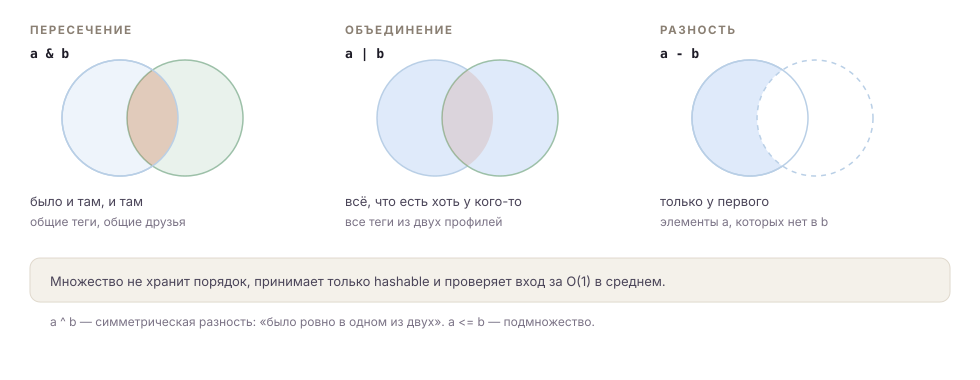

set: пропускной пункт без дублей Почему «есть ли такой?» — самый быстрый вопрос к данным
Множество — это фейс-контроль: на входе проверяют, был ли уже такой гость, и второй раз не пускают. Отсюда всё остальное: уникальность без сортировки, проверка входа за одно действие, четыре операции над наборами — и цена в виде потерянного порядка.
01Зачем это backend-разработчику
Множество появляется там, где важно не «сколько» и не «в каком порядке», а «есть или нет». Это половина типичных проверок в backend.
- Уникальность: теги, email, ID, посещённые страницы. Дубли часто приходят из данных, и их нужно схлопнуть до записи в базу.
- Быстрая проверка входа: «пользователь в чёрном списке?», «роль входит в разрешённые?». Список просматривает всё, множество — прыгает по адресу.
- Сравнение наборов: пересечение аудиторий, «что появилось, а что удалилось», «кто был на обоих курсах». В SQL это
INTERSECT,UNION,EXCEPT. - Собеседование: «set или list?», «почему нельзя
s[0]?», «зачемfrozenset?» — проверяют, понимаете ли вы хеш-таблицу.
set — это dict, у которого забыли значения: та же хеш-таблица,
только хранится лишь ключ. Поэтому «внутри — хеш-таблица» — правильное начало ответа.
02Ассоциация-якорь: фейс-контроль
set — это список гостей на входе в клуб. Охранник не обходит зал в поисках человека: он смотрит в список — «есть уже?» — и решает за одно действие.
Список гостей не упорядочен. Это не журнал с номерами, а алфавитная картотека: важно только «внутри или нет». Второй раз одного и того же человека не записывают — поэтому в множестве не бывает дублей.
Метафора объясняет три свойства, которые часто спрашивают. Во-первых, проверка входа O(1):
охранник не перебирает зал. Во-вторых, дубликатов нет: повторная запись ничего не делает.
В-третьих, порядка нет: у картотеки нет понятия «первый гость», поэтому set
нельзя индексировать и нельзя полагаться на порядок вывода.
03Ассоциативный ряд: восемь звеньев
- hashгость получает номерок
- уникальностьвторой раз не пускают
- нет порядкакартотека, а не журнал
- O(1)проверка входа в среднем
- & пересечениебыло и там, и там
- | объединениебыло хоть где-то
- − разностьтолько здесь
- frozensetзапечатанная картотека — можно в ключ
Сравните с рядом из главы 02: там было восемь звеньев про «ключ → номерок → ячейка». Здесь ядро то же, меняется только то, что значение в ячейке не нужно — и поэтому исчезает порядок вставки.
04Схема: четыре операции на одном рисунке

a ^ b
(«ровно в одном») на рисунке не закрашена отдельно — это объединение минус пересечение.
Запомните направление: a - b — это «что удалить из a,
чтобы стало b». Разность несимметрична: a - b и
b - a — разные множества, и на собеседовании это любят уточнять.
05Как это устроено на самом деле
Внутри — та же хеш-таблица, что у словаря: массив ячеек, хеш ключа, пробирование при коллизиях. Отличие одно: у ячейки нет значения. Поэтому:
- элементы должны быть hashable — строка, число, tuple из hashable,
frozenset; - порядок обхода зависит от хешей и не гарантирован; для строк он к тому же рандомизирован между запусками;
- память дороже списка: под таблицу нужен запас, а не только элементы.
| list | set | dict | |
|---|---|---|---|
| Дубликаты | разрешены | невозможны | ключи уникальны |
| Порядок | порядок вставки | не гарантирован | порядок вставки |
| Доступ по индексу | lst[0] | нет | нет |
| Проверка входа | O(n) | O(1) в среднем | O(1) в среднем |
| Память для 3 чисел | 88 байт | 216 байт | больше |
| Ключи | — | — | только hashable |
Цифры памяти — sys.getsizeof на CPython 3.12. Разница в 2–3 раза — нормальная цена
за O(1): таблица резервирует пустые ячейки, чтобы не переполняться.
06Лаборатория: запустить и увидеть
Фрагменты файла snippets/04_set_lab.py.
Числа зависят от машины, порядок элементов множества — от запуска.
Шаг 1. Дубликаты и порядок
tags = ["sql", "python", "sql", "pandas", "python"] print(set(tags)) print(list(dict.fromkeys(tags))) # порядок сохранён print(set([3, 1, 2])) # порядок вставки не сохраняется
Обратите внимание: в первом случае порядок случайно совпал с исходным, во втором — нет.
Это и есть «не гарантирован»: сегодня так, завтра иначе. Если порядок важен — dict.fromkeys.
Шаг 2. Проверка входа: список против множества
users = [f"user{i}" for i in range(200_000)]
user_set = set(users)
"user199999" in users # список: просмотр элементов, O(n)
"user199999" in user_set # множество: хеш и ячейка, O(1)
Шаг 3. Четыре операции
a = {"python", "sql", "pandas"}
b = {"python", "airflow", "dbt"}
print(sorted(a & b)) # было и там, и там
print(sorted(a | b)) # было хоть где-то
print(sorted(a - b)) # только у a
print(sorted(a ^ b)) # ровно в одном
Шаг 4. Пересечение «в лоб» и через set
left = [f"id{i}" for i in range(2_000)]
right = [f"id{i}" for i in range(1_000, 3_000)]
naive = [x for x in left if x in right] # O(n·m)
fast = set(left) & set(right) # O(n + m)
Разница в 50 раз на двух тысячах элементов. На 100 000 это уже секунды против миллисекунд — и типичная причина «тормозит endpoint».
Шаг 5. frozenset как ключ
permissions = {
frozenset({"read", "write"}): "editor",
frozenset({"read"}): "viewer",
}
print(permissions[frozenset({"write", "read"})])
Обычное множество изменяемо, поэтому ключом быть не может. frozenset — его
неизменяемый брат: тот же набор, но «запечатанный», и его можно класть в ключи и в другие множества.
07Мост: та же идея в pandas, SQL и NumPy
pandas: уникальные значения и isin
import pandas as pd
df = pd.DataFrame({"user": ["Anna", "Ivan", "Anna"], "amount": [1200, 800, 500]})
df["user"].unique() # как set, но возвращает массив
df["user"].isin({"Anna", "Petr"}) # как `in set` для каждой строки
df["user"].value_counts() # как Counter из главы 06
# операции над индексами — те же множества
idx1.intersection(idx2); idx1.union(idx2); idx1.difference(idx2)
isin принимает именно множество — и это не случайно: проверка каждого значения
должна быть O(1), иначе фильтрация по большому списку разрешений станет квадратичной.
SQL: IN, EXISTS и операции над результатами
SELECT * FROM users WHERE id IN (1, 2, 3); -- проверка входа SELECT * FROM a INTERSECT SELECT * FROM b; -- пересечение SELECT * FROM a UNION SELECT * FROM b; -- объединение без дублей SELECT * FROM a EXCEPT SELECT * FROM b; -- разность UNION ALL -- без удаления дублей: дешевле
UNION неявно делает DISTINCT — то есть строит множество
и платит за это. Если дубликаты допустимы, UNION ALL заметно быстрее.
Python: ключи словаря — тоже множество
d1 = {"a": 1, "b": 2}
d2 = {"b": 3, "c": 4}
d1.keys() & d2.keys() # {'b'} — общие ключи
d1.keys() | d2.keys() # {'a', 'b', 'c'}
keys() возвращает представление, которое поддерживает операции множеств.
Это удобно для сравнения конфигов и поиска расхождений между двумя словарями.
08Шесть ошибок, на которых спотыкаются
Порядок теряется: список соберётся в порядке обхода хеш-таблицы, а не в порядке появления.
list(dict.fromkeys(items)).Индексов нет: множество не упорядочено. TypeError: 'set' object is not subscriptable.
next(iter(s)); нужен порядок — список.{} создаёт пустой словарь. Пустое множество — только set().
type({}) is dict, type(set()) is set.{["a"]} — TypeError: unhashable type: 'list'. Множество принимает только hashable.
{("a",)} — если содержимое неизменяемо.for x in s: s.add(...) → RuntimeError: Set changed size during iteration.
for x in list(s).Порядок обхода зависит от хешей, а для строк рандомизирован между запусками. Тест, который сравнивает list(s) с ожидаемым списком, будет падать через раз.
assert set(result) == {"a", "b"}.09Вопросы с собеседования
Чем set отличается от list?
Список хранит элементы по порядку и позволяет дубликаты; множество хранит только уникальные и не гарантирует порядок. Внутри множества — хеш-таблица, поэтому проверка входа в среднем O(1) против O(n) у списка. Цена — больше памяти и отсутствие индексов.
Чем set отличается от dict?
Внутри — одна и та же хеш-таблица. У словаря есть значения и сохраняется порядок вставки, у множества только ключи и порядок не гарантирован. set — это словарь, у которого значение не нужно.
Почему порядок элементов не гарантирован?
Элементы лежат в ячейках, вычисленных из хеша. Обход идёт по ячейкам, а не по порядку добавления. Для строк хеш рандомизирован между запусками (защита от подбора коллизий), поэтому даже между двумя запусками порядок может отличаться.
Что можно класть в set?
Только hashable: числа, строки, tuple из hashable, frozenset. Списки, словари и обычные множества — нельзя.
Что такое frozenset и зачем он нужен?
Неизменяемое множество. Оно hashable, поэтому может быть ключом словаря или элементом другого множества. Нужен, когда набор значений — это идентификатор: например, набор прав доступа как ключ кэша.
Как быстро найти общие элементы двух списков?
set(a) & set(b) — O(n + m) в среднем. Вариант «вложенный цикл со списком» — O(n·m). На двух тысячах элементов разница в десятки раз, на сотнях тысяч — в тысячи.
Когда set проигрывает списку?
Когда коллекция маленькая (выигрыш незаметен), когда нужен порядок или индекс, когда важна память, когда нужно часто обходить все элементы подряд. Хеширование и запас ячеек — не бесплатные.
Как удалить дубликаты, сохранив порядок?
list(dict.fromkeys(items)): словарь помнит порядок вставки, а повторный ключ не создаёт новую запись. Если порядок не важен — list(set(items)).
10Три задачи: сначала своя попытка
01 Общие теги
Даны теги двух пользователей. Найдите общие, а также те, что есть только у первого.
u1 = {"python", "sql", "pandas", "airflow"}
u2 = {"python", "dbt", "sql"}
Показать решение и разбор
common = u1 & u2
only_u1 = u1 - u2
print(common) # {'python', 'sql'}
print(sorted(only_u1)) # ['airflow', 'pandas']
print(u1.isdisjoint(u2)) # False — пересечение не пусто
Что важно. Порядок вывода множества не гарантирован, поэтому для печати — sorted().
В pandas это index.intersection, в SQL — INTERSECT.
02 Элементы, встречающиеся ровно один раз
Дан список. Верните элементы, которые встречаются ровно один раз, сохранив порядок первого появления.
items = ["a", "b", "a", "c", "b", "d"] # ожидается: ['c', 'd']
Показать решение и разбор
from collections import Counter counts = Counter(items) result = [x for x in dict.fromkeys(items) if counts[x] == 1] print(result) # ['c', 'd']
Что важно. Здесь работают сразу три главы: Counter считает,
dict.fromkeys убирает дубли с сохранением порядка, comprehension фильтрует.
Чистое решение через множество было бы возможно, но порядок пришлось бы восстанавливать отдельно.
03 Нормализация email
Приведите адреса к нижнему регистру, обрежьте пробелы и удалите дубли, сохранив порядок.
Показать решение и разбор
raw = [" Anna@Mail.ru ", "ivan@mail.ru", "anna@mail.ru", "IVAN@mail.ru "] clean = [e.strip().lower() for e in raw] unique = list(dict.fromkeys(clean)) print(unique) # ['anna@mail.ru', 'ivan@mail.ru']
Что важно. Нормализация идёт до дедупликации: иначе " Anna@Mail.ru "
и "anna@mail.ru" останутся разными. А set здесь не подходит —
он потеряет порядок, который обычно нужен для стабильного вывода.